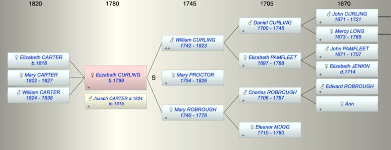

| [Index] |
| Elizabeth CURLING (1789 - ) |
|  |
| b. 14 Jun 1789 at City of London |
| m. 08 Aug 1815 Joseph Fuller CARTER ( - 1824) at St Mary Newington Southwark |
| Parents: |
| William CURLING (1742 - 1823) |
| Mary ROBROUGH (1740 - 1776) |
| Children (3): |
| Elizabeth CARTER (1818 - ) |
| Mary Curling CARTER (1822 - 1827) |
| William Curling CARTER (1824 - 1838) |
| Events in Elizabeth CURLING (1789 - )'s life | |||||
| Date | Age | Event | Place | Notes | Src |
| 1776 | Death of mother Mary ROBROUGH (aged 36) | Southwark | Note 1 | ||
| 14 Jun 1789 | Elizabeth CURLING was born | City of London | Note 2 | ||
| 08 Aug 1815 | 26 | Married Joseph Fuller CARTER | St Mary Newington Southwark | Note 3 | |
| 11 Jan 1818 | 28 | Birth of daughter Elizabeth CARTER | Bushey, Herts | of Clay Hill ex Ancestry PR | |
| 25 Jan 1822 | 32 | Birth of daughter Mary Curling CARTER | Bushey, Herts | of Clay Hill ex Ancestry PR | |
| 1823 | 34 | Death of father William CURLING (aged 81) | |||
| 1824 | 35 | Death of husband Joseph Fuller CARTER | Note 4 | ||
| 01 Feb 1824 | 34 | Birth of son William Curling CARTER | Note 5 | ||
| 1826 | 37 | Death of step mother Mary PROCTOR (aged 72) | Note 6 | ||
| 1827 | 38 | Death of daughter Mary Curling CARTER (aged 5) | London | Note 7 | |
| 1838 | 49 | Death of son William Curling CARTER (aged 14) | London | Note 8 | |
| Created on a Mac™ using iFamily for Mac™ on 8 Oct 2023 |